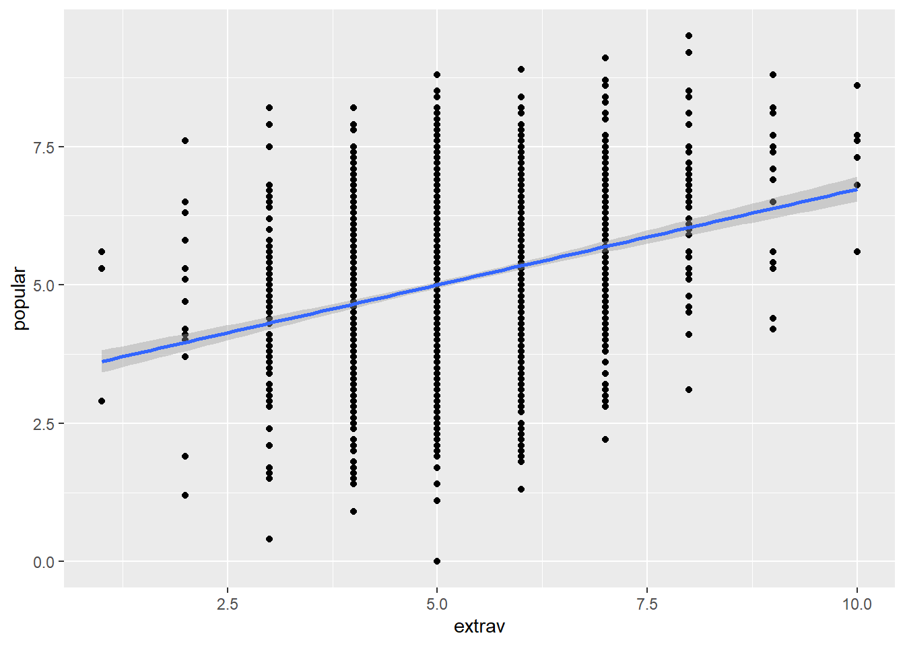
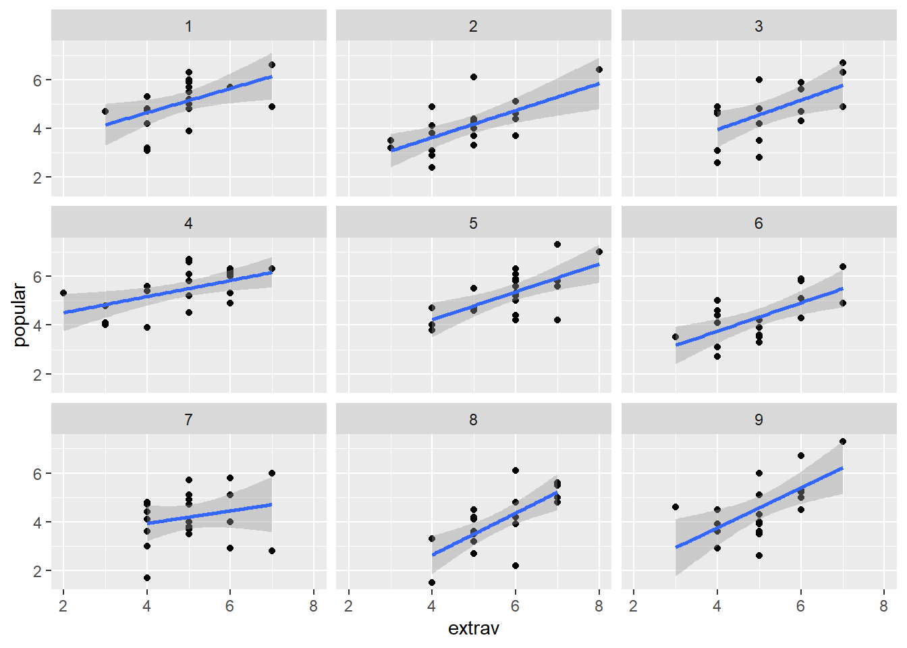
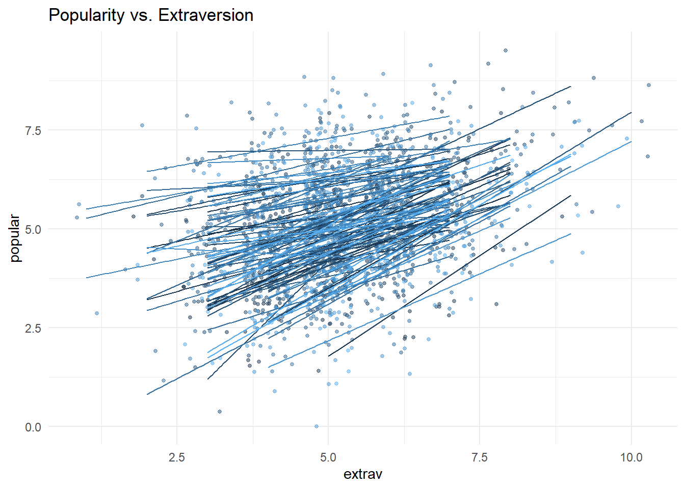

https://stat.utexas.edu/images/SSC/documents/SoftwareTutorials/MultilevelModeling.pdf
https://cehs-research.github.io/eBook_multilevel/mlm-2-levels-pupil-popularity.html
I refer the code on these websites. I followed the general tutorials instructed on these website.
However, I made some changes. (I do some extra analysis that was not on the website etc. ) I also explained by myself.
ICC calculated based on the null model.
library(foreign)
library(tidyverse)
library(haven)
library(furniture)
#install.packages('furniture')
library(stargazer)
library(texreg)
#install.packages('texreg')
library(gridExtra)
#install.packages('gridExtra')
library(psych)
library(car)
#install.packages('car')
library(nlme)
library(lme4)
library(lmerTest)
library(optimx)
#install.packages('optimx')
# oh my gosh this never ends.
# packages <- c('performance','interactions','HLMdiag','sjstats')
#
# installed_packages <- packages %in% rownames(installed.packages())
# if (any(installed_packages == FALSE)) {
# install.packages(packages[!installed_packages])
# }
#devtools::install_github("goodekat/redres")
library(performance)
library(interactions)
library(HLMdiag)
library(redres)
library(sjstats)
library(predict3d)data_raw <- haven::read_sav("https://github.com/MultiLevelAnalysis/Datasets-third-edition-Multilevel-book/raw/master/chapter%202/popularity/SPSS/popular2.sav")
summary(data_raw)## pupil class extrav sex
## Min. : 1.00 Min. : 1.00 Min. : 1.000 Min. :0.0000
## 1st Qu.: 6.00 1st Qu.: 25.00 1st Qu.: 4.000 1st Qu.:0.0000
## Median :11.00 Median : 51.00 Median : 5.000 Median :1.0000
## Mean :10.65 Mean : 50.37 Mean : 5.215 Mean :0.5055
## 3rd Qu.:16.00 3rd Qu.: 76.00 3rd Qu.: 6.000 3rd Qu.:1.0000
## Max. :26.00 Max. :100.00 Max. :10.000 Max. :1.0000
## texp popular popteach Zextrav
## Min. : 2.00 Min. :0.000 Min. : 1.000 Min. :-3.3390
## 1st Qu.: 8.00 1st Qu.:4.100 1st Qu.: 4.000 1st Qu.:-0.9625
## Median :15.00 Median :5.100 Median : 5.000 Median :-0.1703
## Mean :14.26 Mean :5.076 Mean : 5.061 Mean : 0.0000
## 3rd Qu.:20.00 3rd Qu.:6.000 3rd Qu.: 6.000 3rd Qu.: 0.6218
## Max. :25.00 Max. :9.500 Max. :10.000 Max. : 3.7905
## Zsex Ztexp Zpopular Zpopteach
## Min. :-1.0108 Min. :-1.8717 Min. :-3.67188 Min. :-2.89165
## 1st Qu.:-1.0108 1st Qu.:-0.9559 1st Qu.:-0.70628 1st Qu.:-0.75523
## Median : 0.9888 Median : 0.1125 Median : 0.01703 Median :-0.04308
## Mean : 0.0000 Mean : 0.0000 Mean : 0.00000 Mean : 0.00000
## 3rd Qu.: 0.9888 3rd Qu.: 0.8756 3rd Qu.: 0.66802 3rd Qu.: 0.66906
## Max. : 0.9888 Max. : 1.6388 Max. : 3.19962 Max. : 3.51762
## Cextrav Ctexp Csex
## Min. :-4.215 Min. :-12.263 Min. :-0.5000
## 1st Qu.:-1.215 1st Qu.: -6.263 1st Qu.:-0.5000
## Median :-0.215 Median : 0.737 Median : 0.5000
## Mean : 0.000 Mean : 0.000 Mean : 0.0055
## 3rd Qu.: 0.785 3rd Qu.: 5.737 3rd Qu.: 0.5000
## Max. : 4.785 Max. : 10.737 Max. : 0.5000data structure:
pupils are nested in the class. trying to predict popluarity of pupil by pupil’s gender and extravert. Furthermore, teacher’s experience (class-level variable) will be considered.
To sum up, we have
Level-1 IV: pupil gender (SEX): coded as boy=0, girl=1
Pupil’s extroversion (extrav) : 10-point scale.
Level-2IV: teacher’s experience (texp)
subsetting the data
# we only take what we need
data_pop <- data_raw %>%
dplyr::mutate(id = paste(class,pupil, sep = "-") %>% #creating uniqe ids for student
factor()) %>%
dplyr::select(id,pupil:popteach)
tibble::glimpse(head(data_pop,10))## Rows: 10
## Columns: 8
## $ id <fct> 1-1, 1-2, 1-3, 1-4, 1-5, 1-6, 1-7, 1-8, 1-9, 1-10
## $ pupil <dbl> 1, 2, 3, 4, 5, 6, 7, 8, 9, 10
## $ class <dbl> 1, 1, 1, 1, 1, 1, 1, 1, 1, 1
## $ extrav <dbl> 5, 7, 4, 3, 5, 4, 5, 4, 5, 5
## $ sex <dbl+lbl> 1, 0, 1, 1, 1, 0, 0, 0, 0, 0
## $ texp <dbl> 24, 24, 24, 24, 24, 24, 24, 24, 24, 24
## $ popular <dbl> 6.3, 4.9, 5.3, 4.7, 6.0, 4.7, 5.9, 4.2, 5.2, 3.9
## $ popteach <dbl> 6, 5, 6, 5, 6, 5, 5, 5, 5, 3check our fancy data
data_pop %>%
dplyr::select(extrav, sex, texp, popular) %>%
data.frame() %>%
stargazer::stargazer(header=F,type="text")##
## =============================================================
## Statistic N Mean St. Dev. Min Pctl(25) Pctl(75) Max
## -------------------------------------------------------------
## extrav 2,000 5.215 1.262 1 4 6 10
## sex 2,000 0.505 0.500 0 0 1 1
## texp 2,000 14.263 6.552 2 8 20 25
## popular 2,000 5.076 1.383 0.000 4.100 6.000 9.500
## -------------------------------------------------------------data_pop %>%
ggplot() +
aes(x = extrav, y = popular)+
geom_point()+
stat_smooth(method=lm)## `geom_smooth()` using formula 'y ~ x' 2. consider cluster (group)
just for curious, we pick first 9 class and see
data_pop %>%
dplyr::filter(class<=9)%>%
ggplot() +
aes(x = extrav, y = popular)+
geom_point()+
stat_smooth(method=lm)+
facet_wrap(~ class) ## `geom_smooth()` using formula 'y ~ x' 3.
ggplot(data = data_pop,
aes(x = extrav,
y = popular,
col = class,
group = class)) +
geom_point(size = 1,
alpha = .5,
position = "jitter") +
theme_minimal() +
theme(legend.position = "none") +
geom_smooth(method = lm,
se = FALSE,
size = .5,
alpha = .8)+ # to add regression line
labs(title = "Popularity vs. Extraversion") This code (for third graph) was adpated from “https://www.rensvandeschoot.com/tutorials/lme4/”
In the tutorial website, the author did not do the centering and keep analyzing. However, in most cases, it is not useful unless it has certian theoritical reasons.
#install.packages('misty')
library(misty)## Warning: package 'misty' was built under R version 4.1.3## |-------------------------------------|
## | misty 0.4.5 (2022-04-29) |
## | Miscellaneous Functions T. Yanagida |
## |-------------------------------------|#center level-1 predictor at the grandmean
data_pop$cgm_extrav<-misty::center(data_pop$extrav)
data_pop$cgm_sex<-misty::center(data_pop$sex)
data_pop$cgm_texp<-misty::center(data_pop$texp)
#center level-1 predictor at the clustermean
data_pop$cwc_extrav<-misty::center(data_pop$extrav, type="CWC", cluster = data_pop$class)
data_pop$cwc_sex<-misty::center(data_pop$sex, type="CWC", cluster = data_pop$class)\[POP_{ij} = \beta_{0} + \beta_{1}SEX_{ij}
+ \beta_{2}EXT_{ij}+e_{ij}\] Random parameter: \(var[e_{ij}]\)
fixed: intercept, slopes.
I won’t check the interaction at this point. This single-level regression is rediculous in that it ignore nonindependenc.
pop_lm<- lm(popular ~ sex + extrav, data = data_pop)
summary(pop_lm)##
## Call:
## lm(formula = popular ~ sex + extrav, data = data_pop)
##
## Residuals:
## Min 1Q Median 3Q Max
## -4.2527 -0.6652 -0.0454 0.7422 3.0473
##
## Coefficients:
## Estimate Std. Error t value Pr(>|t|)
## (Intercept) 2.78954 0.10355 26.94 <2e-16 ***
## sex 1.50508 0.04836 31.12 <2e-16 ***
## extrav 0.29263 0.01916 15.28 <2e-16 ***
## ---
## Signif. codes: 0 '***' 0.001 '**' 0.01 '*' 0.05 '.' 0.1 ' ' 1
##
## Residual standard error: 1.077 on 1997 degrees of freedom
## Multiple R-squared: 0.3938, Adjusted R-squared: 0.3932
## F-statistic: 648.6 on 2 and 1997 DF, p-value: < 2.2e-16level 1:
\[y_{ij} = \beta_{0j} + e_{ij}\]
level2:
\(\beta_{0j}\) is the intercept, and
this can be expressed as:
\[ \beta_{0j} = \gamma_{00} +
u_{0j}\] \(\gamma_{00}\) =
(overall mean)
\(u_{0j}\) = class effect, the variance
of the mean for each class around the overall mean of DV (popular)
score.
Combined together : mixed model
\[y_{ij} = \gamma_{00} + u_{0j} + e_{ij}\] random effect: var[\(e_{ij}\)], var[\(u_{0j}\)] fixed effect: \(\gamma_{00}\)
#My preference towards REML :D
null<-lmer(popular~1 + (1|class), data=data_pop, REML=TRUE)
summary(null)## Linear mixed model fit by REML. t-tests use Satterthwaite's method [
## lmerModLmerTest]
## Formula: popular ~ 1 + (1 | class)
## Data: data_pop
##
## REML criterion at convergence: 6330.5
##
## Scaled residuals:
## Min 1Q Median 3Q Max
## -3.5655 -0.6975 0.0020 0.6758 3.3175
##
## Random effects:
## Groups Name Variance Std.Dev.
## class (Intercept) 0.7021 0.8379
## Residual 1.2218 1.1053
## Number of obs: 2000, groups: class, 100
##
## Fixed effects:
## Estimate Std. Error df t value Pr(>|t|)
## (Intercept) 5.07786 0.08739 98.90973 58.1 <2e-16 ***
## ---
## Signif. codes: 0 '***' 0.001 '**' 0.01 '*' 0.05 '.' 0.1 ' ' 1Interpretaion: grandmean of pop of all students = 5.0779 class average tends to vary by 0.08738 (approximately)
ICC : proportion of between-class variance and total variance.
\[\rho = \frac{\sigma^{2}_{u0}}{\sigma^{2}_{u0} + \sigma^{2}_{e}}\]
By hand… \[\rho = \frac{0.7021}{0.7021 + 1.2218}\]
or..using a great package..
performance::icc(null)## # Intraclass Correlation Coefficient
##
## Adjusted ICC: 0.365
## Conditional ICC: 0.365interpretation: 36.5% of variance is due to the group
level 1:
\[y_{ij} = \beta_{0j} + \beta_{1j}Extra_{ij}
+ e_{ij}\] level2:
level2: \[ \beta_{0j} = \gamma_{00} + u_{0j}\]
\[ \beta_{1j} = \gamma_{00}\] we do not have a error term since this is fixed.
Combined together : mixed model
\[y_{ij} = \gamma_{00} +
\gamma_{10}Extra_{ij} + u_{0j} + e_{ij}\] random effect:
var[\(e_{ij}\)], var[\(u_{0j}\)]
fixed effect: \(\gamma_{00}\), \(\gamma_{10}\)
#My preference towards REML :D
onefix<-lmer(popular~1 + cgm_extrav + (1|class), data=data_pop, REML=TRUE)
summary(onefix)## Linear mixed model fit by REML. t-tests use Satterthwaite's method [
## lmerModLmerTest]
## Formula: popular ~ 1 + cgm_extrav + (1 | class)
## Data: data_pop
##
## REML criterion at convergence: 5832.6
##
## Scaled residuals:
## Min 1Q Median 3Q Max
## -3.0644 -0.7267 0.0165 0.7088 3.3587
##
## Random effects:
## Groups Name Variance Std.Dev.
## class (Intercept) 0.8406 0.9168
## Residual 0.9304 0.9646
## Number of obs: 2000, groups: class, 100
##
## Fixed effects:
## Estimate Std. Error df t value Pr(>|t|)
## (Intercept) 5.078e+00 9.421e-02 9.830e+01 53.90 <2e-16 ***
## cgm_extrav 4.863e-01 2.015e-02 1.965e+03 24.13 <2e-16 ***
## ---
## Signif. codes: 0 '***' 0.001 '**' 0.01 '*' 0.05 '.' 0.1 ' ' 1
##
## Correlation of Fixed Effects:
## (Intr)
## cgm_extrav 0.000level 1:
\[y_{ij} = \beta_{0j} + \beta_{1j}Extra_{ij}
+ e_{ij}\] level2:
level2: \[ \beta_{0j} = \gamma_{00} + u_{0j}\]
\[ \beta_{1j} = \gamma_{10} + u_{1j}\]
Combined together : mixed model
\[y_{ij} = \gamma_{00} + \gamma_{10}Extra_{ij} + u_{0j} + u_{1j}Extrav_{ij} + e_{ij}\]
random effect: var[\(e_{ij}\)],
var[\(u_{0j}\)]
fixed effect: \(\gamma_{00}\), \(\gamma_{10}\)
#My preference towards REML :D
oneram<-lmer(popular~1 + cgm_extrav + (1 + cgm_extrav|class), data=data_pop, REML=TRUE)
summary(oneram)## Linear mixed model fit by REML. t-tests use Satterthwaite's method [
## lmerModLmerTest]
## Formula: popular ~ 1 + cgm_extrav + (1 + cgm_extrav | class)
## Data: data_pop
##
## REML criterion at convergence: 5779.4
##
## Scaled residuals:
## Min 1Q Median 3Q Max
## -3.1961 -0.7291 0.0146 0.6816 3.2217
##
## Random effects:
## Groups Name Variance Std.Dev. Corr
## class (Intercept) 0.89178 0.9443
## cgm_extrav 0.02599 0.1612 -0.88
## Residual 0.89492 0.9460
## Number of obs: 2000, groups: class, 100
##
## Fixed effects:
## Estimate Std. Error df t value Pr(>|t|)
## (Intercept) 5.03127 0.09702 97.07723 51.86 <2e-16 ***
## cgm_extrav 0.49286 0.02546 89.69832 19.36 <2e-16 ***
## ---
## Signif. codes: 0 '***' 0.001 '**' 0.01 '*' 0.05 '.' 0.1 ' ' 1
##
## Correlation of Fixed Effects:
## (Intr)
## cgm_extrav -0.552level 1:
\[y_{ij} = \beta_{0j} + \beta_{1j}EXTRA_{ij}
+ \beta_{1j}SEX_{ij} + e_{ij}\] level2:
level2: \[ \beta_{0j} = \gamma_{00} + u_{0j}\]
\[ \beta_{1j} = \gamma_{10} + u_{1j}\] \[ \beta_{2j} = \gamma_{20} + u_{2j}\]
Combined together : mixed model
\[y_{ij} = \gamma_{00} + \gamma_{10}Extra_{ij} + \gamma_{20}SEX_{ij} + u_{0j} + u_{1j}Extrav_{ij} + u_{2j}SEX_{ij} + e_{ij}\]
tworam<-lmer(popular~1 + cgm_extrav + cgm_sex + (1 + cgm_extrav+cgm_sex|class), data=data_pop)## Warning in checkConv(attr(opt, "derivs"), opt$par, ctrl = control$checkConv, :
## Model failed to converge with max|grad| = 0.00263437 (tol = 0.002, component 1)summary(tworam)## Linear mixed model fit by REML. t-tests use Satterthwaite's method [
## lmerModLmerTest]
## Formula: popular ~ 1 + cgm_extrav + cgm_sex + (1 + cgm_extrav + cgm_sex |
## class)
## Data: data_pop
##
## REML criterion at convergence: 4870.5
##
## Scaled residuals:
## Min 1Q Median 3Q Max
## -3.01902 -0.64955 -0.01056 0.67100 3.11760
##
## Random effects:
## Groups Name Variance Std.Dev. Corr
## class (Intercept) 0.673421 0.82062
## cgm_extrav 0.029849 0.17277 -0.74
## cgm_sex 0.005363 0.07324 -0.65 -0.04
## Residual 0.552886 0.74356
## Number of obs: 2000, groups: class, 100
##
## Fixed effects:
## Estimate Std. Error df t value Pr(>|t|)
## (Intercept) 5.02735 0.08408 95.88747 59.80 <2e-16 ***
## cgm_extrav 0.44300 0.02343 91.03168 18.91 <2e-16 ***
## cgm_sex 1.24483 0.03728 504.19278 33.39 <2e-16 ***
## ---
## Signif. codes: 0 '***' 0.001 '**' 0.01 '*' 0.05 '.' 0.1 ' ' 1
##
## Correlation of Fixed Effects:
## (Intr) cgm_xt
## cgm_extrav -0.533
## cgm_sex -0.125 -0.065
## optimizer (nloptwrap) convergence code: 0 (OK)
## Model failed to converge with max|grad| = 0.00263437 (tol = 0.002, component 1)model failed (convergency problem) with a random effect with a variance very close to zero, this model should be reconsidered : convergency
Alternatively, using ML:
tworam<-lmer(popular~1 + cgm_extrav + cgm_sex + (1 + cgm_extrav+cgm_sex|class), data=data_pop, REML=FALSE)## boundary (singular) fit: see help('isSingular')summary(tworam)## Linear mixed model fit by maximum likelihood . t-tests use Satterthwaite's
## method [lmerModLmerTest]
## Formula: popular ~ 1 + cgm_extrav + cgm_sex + (1 + cgm_extrav + cgm_sex |
## class)
## Data: data_pop
##
## AIC BIC logLik deviance df.resid
## 4876.6 4932.6 -2428.3 4856.6 1990
##
## Scaled residuals:
## Min 1Q Median 3Q Max
## -3.02040 -0.64844 -0.01135 0.66882 3.11852
##
## Random effects:
## Groups Name Variance Std.Dev. Corr
## class (Intercept) 0.665942 0.81605
## cgm_extrav 0.029206 0.17090 -0.74
## cgm_sex 0.005292 0.07275 -0.65 -0.03
## Residual 0.552663 0.74341
## Number of obs: 2000, groups: class, 100
##
## Fixed effects:
## Estimate Std. Error df t value Pr(>|t|)
## (Intercept) 5.02763 0.08362 96.87007 60.12 <2e-16 ***
## cgm_extrav 0.44293 0.02328 91.76423 19.02 <2e-16 ***
## cgm_sex 1.24483 0.03726 511.51608 33.41 <2e-16 ***
## ---
## Signif. codes: 0 '***' 0.001 '**' 0.01 '*' 0.05 '.' 0.1 ' ' 1
##
## Correlation of Fixed Effects:
## (Intr) cgm_xt
## cgm_extrav -0.534
## cgm_sex -0.125 -0.064
## optimizer (nloptwrap) convergence code: 0 (OK)
## boundary (singular) fit: see help('isSingular')isSingular(tworam, tol = 1e-4)## [1] TRUEmatrix argument is singular.
level 1:
\[y_{ij} = \beta_{0j} + \beta_{1j}EXTRA_{ij}
+ \beta_{2j}SEX_{ij} + e_{ij}\]
level2: \[ \beta_{0j} = \gamma_{00} +\gamma_{01}Texp_{j} + u_{0j}\]
\[ \beta_{1j} = \gamma_{10} + u_{1j}\] \[ \beta_{2j} = \gamma_{20} + u_{2j}\]
Combined together : mixed model
\[y_{ij} = \gamma_{00} +\gamma_{01}Texp_{j} + \gamma_{20}SEX_{ij} + u_{1j}Extrav_{ij} + u_{2j}SEX_{ij} + u_{0j}+e_{ij}\]
#My preference towards REML :D
#
inter<-lmer(popular~1+cgm_extrav+cgm_sex+texp + (1+cgm_extrav+cgm_sex|class), data = data_pop)
summary(inter)## Linear mixed model fit by REML. t-tests use Satterthwaite's method [
## lmerModLmerTest]
## Formula: popular ~ 1 + cgm_extrav + cgm_sex + texp + (1 + cgm_extrav +
## cgm_sex | class)
## Data: data_pop
##
## REML criterion at convergence: 4833.3
##
## Scaled residuals:
## Min 1Q Median 3Q Max
## -3.1642 -0.6554 -0.0246 0.6711 2.9570
##
## Random effects:
## Groups Name Variance Std.Dev. Corr
## class (Intercept) 0.284302 0.53320
## cgm_extrav 0.034740 0.18639 -0.09
## cgm_sex 0.002404 0.04903 -0.98 -0.09
## Residual 0.551436 0.74259
## Number of obs: 2000, groups: class, 100
##
## Fixed effects:
## Estimate Std. Error df t value Pr(>|t|)
## (Intercept) 3.753e+00 1.365e-01 1.031e+02 27.49 <2e-16 ***
## cgm_extrav 4.529e-01 2.465e-02 9.621e+01 18.38 <2e-16 ***
## cgm_sex 1.251e+00 3.694e-02 9.860e+02 33.86 <2e-16 ***
## texp 8.951e-02 8.618e-03 1.013e+02 10.39 <2e-16 ***
## ---
## Signif. codes: 0 '***' 0.001 '**' 0.01 '*' 0.05 '.' 0.1 ' ' 1
##
## Correlation of Fixed Effects:
## (Intr) cgm_xt cgm_sx
## cgm_extrav -0.105
## cgm_sex -0.015 -0.066
## texp -0.911 0.089 -0.039
## optimizer (nloptwrap) convergence code: 0 (OK)
## boundary (singular) fit: see help('isSingular')level 1:
\[y_{ij} = \beta_{0j} + \beta_{1j}EXTRA_{ij}
+ \beta_{2j}SEX_{ij} + e_{ij}\]
level2: \[ \beta_{0j} = \gamma_{00} +\gamma_{01}Texp_{j} + u_{0j}\]
\[ \beta_{1j} = \gamma_{10} +\gamma_{11}Texp_{j}+ u_{1j}\] \[ \beta_{2j} = \gamma_{20} +\gamma_{21}Texp_{j}+ u_{2j}\]
Combined together : mixed model
\[y_{ij} = \gamma_{00} +\gamma_{01}Texp_{j} + \gamma_{10}Extra_{ij} + \gamma_{20}SEX_{ij} + \gamma_{11}Texp_{j}*Extrav_{ij} + \gamma_{21}Texp_{j}*Sex_{ij} + u_{1j}*Extrav_{ij} + u_{2j}SEX_{ij} + u_{0j}+e_{ij}\]
#My preference towards REML :D
#
inter<-lmer(popular~1+cgm_extrav+cgm_sex+cgm_texp + cgm_extrav*cgm_texp+cgm_sex*cgm_texp+ (1+cgm_extrav+cgm_sex|class), data = data_pop)## boundary (singular) fit: see help('isSingular')summary(inter)## Linear mixed model fit by REML. t-tests use Satterthwaite's method [
## lmerModLmerTest]
## Formula: popular ~ 1 + cgm_extrav + cgm_sex + cgm_texp + cgm_extrav *
## cgm_texp + cgm_sex * cgm_texp + (1 + cgm_extrav + cgm_sex | class)
## Data: data_pop
##
## REML criterion at convergence: 4786.7
##
## Scaled residuals:
## Min 1Q Median 3Q Max
## -3.12085 -0.64851 -0.01954 0.68699 3.05066
##
## Random effects:
## Groups Name Variance Std.Dev. Corr
## class (Intercept) 0.286486 0.53524
## cgm_extrav 0.005583 0.07472 -0.10
## cgm_sex 0.004141 0.06435 -0.85 -0.45
## Residual 0.552080 0.74302
## Number of obs: 2000, groups: class, 100
##
## Fixed effects:
## Estimate Std. Error df t value Pr(>|t|)
## (Intercept) 4.998284 0.056689 99.920415 88.170 < 2e-16 ***
## cgm_extrav 0.450533 0.017465 82.663266 25.797 < 2e-16 ***
## cgm_sex 1.240359 0.036858 571.596862 33.652 < 2e-16 ***
## cgm_texp 0.097161 0.008700 103.199839 11.168 < 2e-16 ***
## cgm_extrav:cgm_texp -0.024704 0.002574 71.874116 -9.597 1.66e-14 ***
## cgm_sex:cgm_texp -0.001772 0.005924 616.426402 -0.299 0.765
## ---
## Signif. codes: 0 '***' 0.001 '**' 0.01 '*' 0.05 '.' 0.1 ' ' 1
##
## Correlation of Fixed Effects:
## (Intr) cgm_xt cgm_sx cgm_tx cgm_x:_
## cgm_extrav -0.038
## cgm_sex -0.137 -0.113
## cgm_texp -0.021 0.120 -0.038
## cgm_xtrv:c_ 0.121 0.015 0.032 -0.120
## cgm_sx:cgm_ -0.041 0.030 -0.015 -0.141 -0.142
## optimizer (nloptwrap) convergence code: 0 (OK)
## boundary (singular) fit: see help('isSingular')isSingular(inter, tol = 1e-4)## [1] TRUE# the matrix argument is singular. If i did not center level 2 variable, it is like this.
inter<-lmer(popular~1+cgm_extrav+cgm_sex+texp + cgm_extrav*texp+cgm_sex*texp+ (1+cgm_extrav+cgm_sex|class), data = data_pop)## Warning in checkConv(attr(opt, "derivs"), opt$par, ctrl = control$checkConv, :
## Model failed to converge with max|grad| = 0.00242626 (tol = 0.002, component 1)summary(inter)## Linear mixed model fit by REML. t-tests use Satterthwaite's method [
## lmerModLmerTest]
## Formula: popular ~ 1 + cgm_extrav + cgm_sex + texp + cgm_extrav * texp +
## cgm_sex * texp + (1 + cgm_extrav + cgm_sex | class)
## Data: data_pop
##
## REML criterion at convergence: 4786.7
##
## Scaled residuals:
## Min 1Q Median 3Q Max
## -3.12086 -0.64855 -0.01958 0.68701 3.05061
##
## Random effects:
## Groups Name Variance Std.Dev. Corr
## class (Intercept) 0.286421 0.53518
## cgm_extrav 0.005583 0.07472 -0.09
## cgm_sex 0.004148 0.06441 -0.85 -0.45
## Residual 0.552086 0.74302
## Number of obs: 2000, groups: class, 100
##
## Fixed effects:
## Estimate Std. Error df t value Pr(>|t|)
## (Intercept) 3.612478 0.137491 104.605988 26.274 < 2e-16 ***
## cgm_extrav 0.802884 0.040418 71.830803 19.864 < 2e-16 ***
## cgm_sex 1.265650 0.092683 666.043417 13.656 < 2e-16 ***
## texp 0.097161 0.008699 103.230989 11.169 < 2e-16 ***
## cgm_extrav:texp -0.024704 0.002574 71.870503 -9.597 1.66e-14 ***
## cgm_sex:texp -0.001773 0.005924 615.663046 -0.299 0.765
## ---
## Signif. codes: 0 '***' 0.001 '**' 0.01 '*' 0.05 '.' 0.1 ' ' 1
##
## Correlation of Fixed Effects:
## (Intr) cgm_xt cgm_sx texp cgm_x:
## cgm_extrav -0.197
## cgm_sex -0.110 -0.161
## texp -0.911 0.161 0.114
## cgm_xtrv:tx 0.158 -0.902 0.142 -0.120
## cgm_sex:txp 0.111 0.142 -0.918 -0.142 -0.142
## optimizer (nloptwrap) convergence code: 0 (OK)
## Model failed to converge with max|grad| = 0.00242626 (tol = 0.002, component 1)